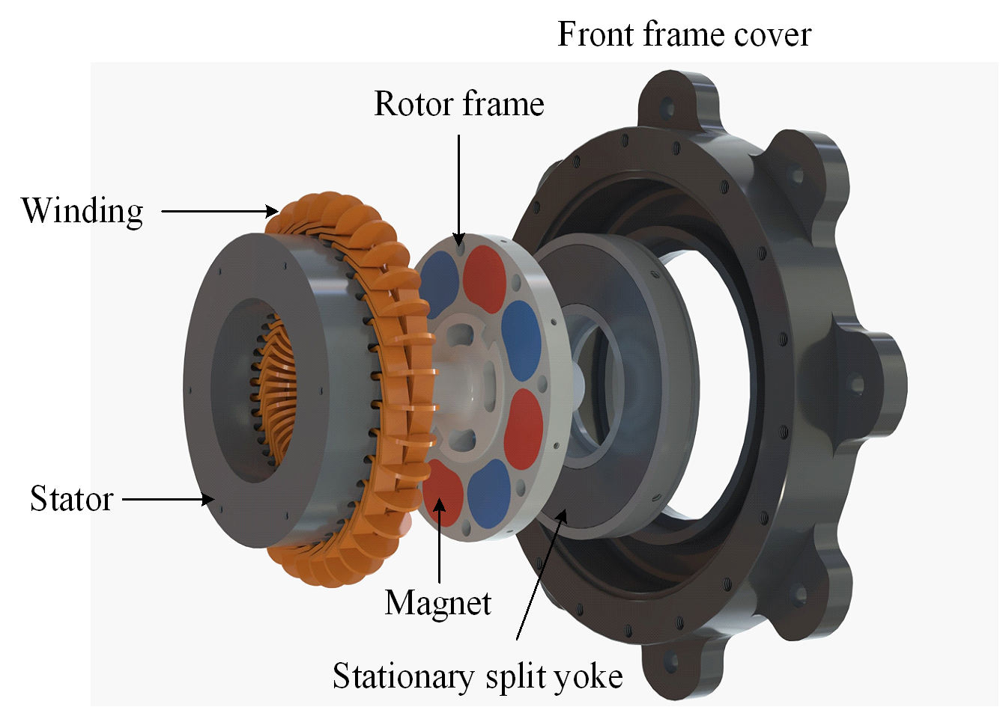
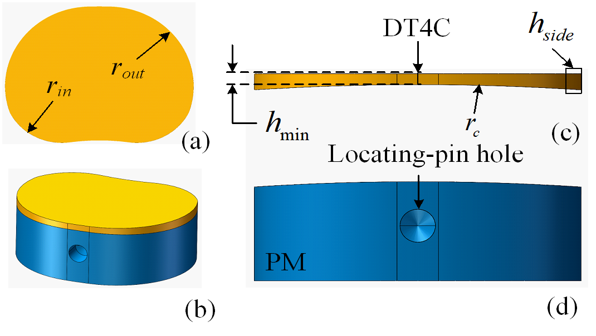
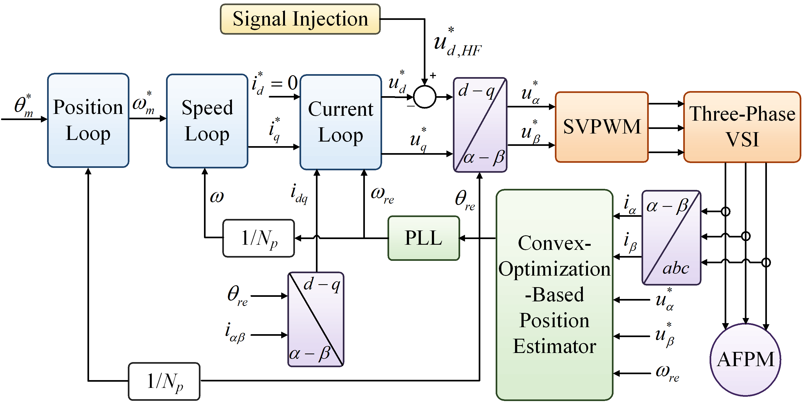
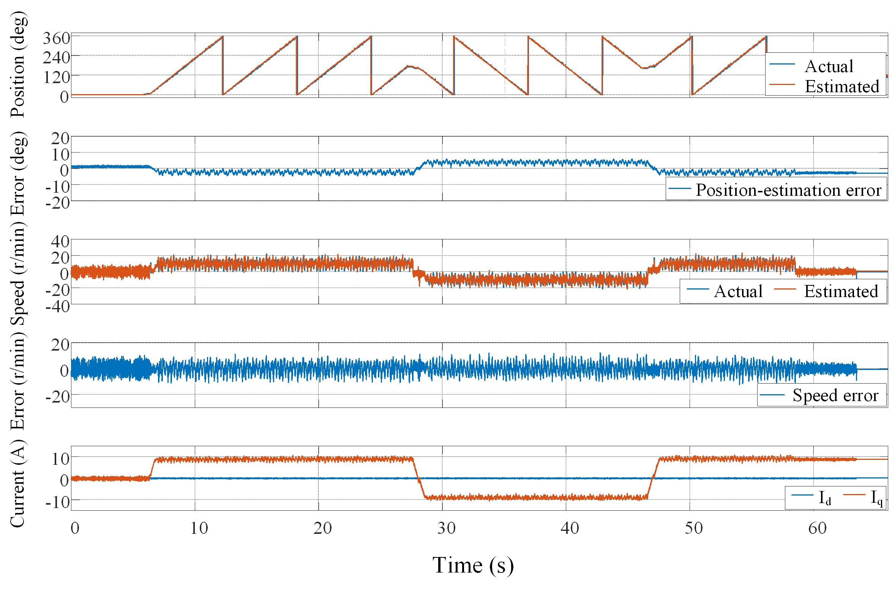
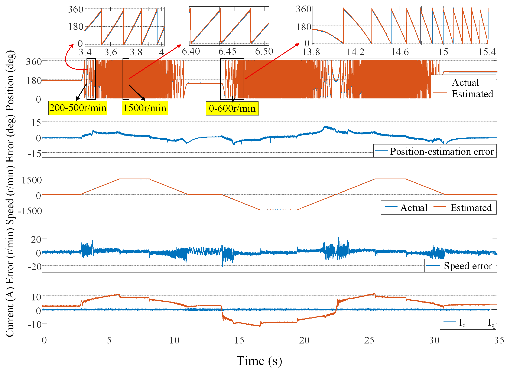
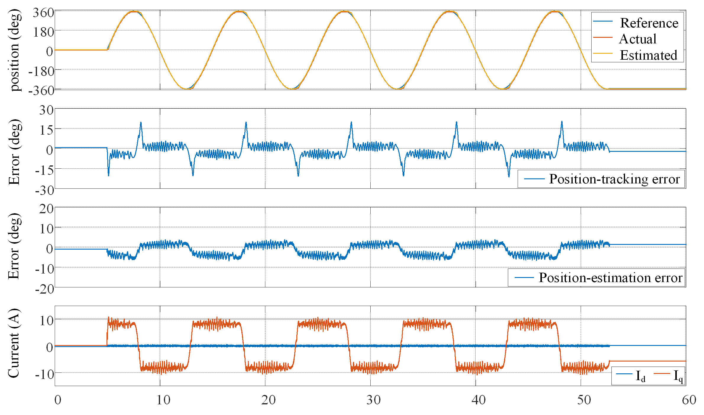
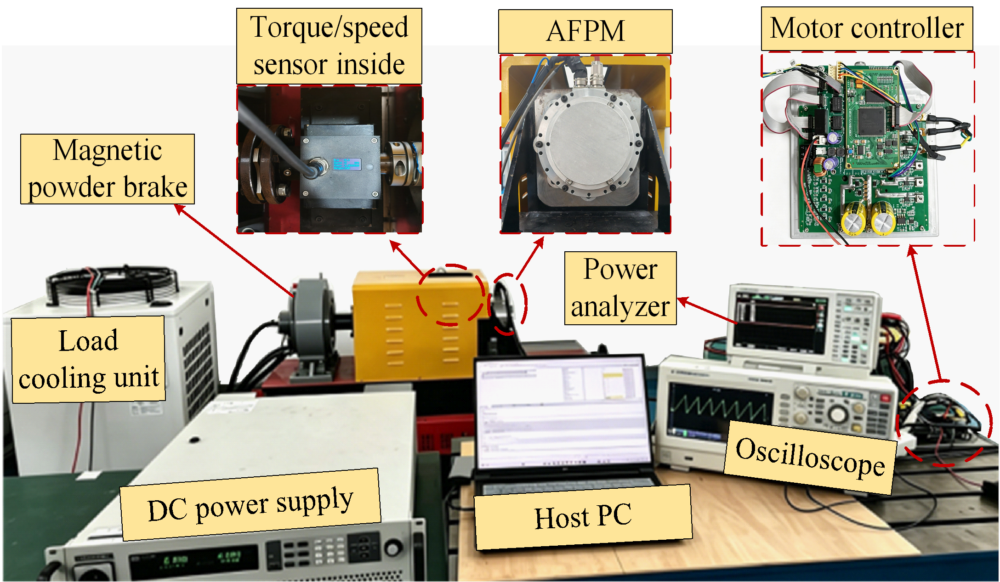

01
Enhance anisotropy
Redistribute magnetic permeance to separate the d- and q-axis inductances.
Experimental project

The split-yoke axial-flux permanent-magnet machine offers low rotor inertia, but its weak magnetic saliency makes standstill and low-speed sensorless control difficult. We introduce a nonuniform permanent-magnet/DT4C composite pole that reshapes the local permeance distribution while preserving the lightweight rotor-support architecture.
The resulting inductance anisotropy strengthens the measurement-dependent curvature used by a convex-optimization-based position estimator. Prototype experiments demonstrate direct sensorless startup, stable low-speed reversals, continuous full-speed-range operation, and sinusoidal position tracking under rated load.
Machine-side innovation
The DT4C insert is thinner at the pole center and thicker at the circumferential sides. This tailored profile reduces
q-axis reluctance more strongly than d-axis reluctance, producing the desired relationship Ld < Lq.

Redistribute magnetic permeance to separate the d- and q-axis inductances.
Avoid flux barriers in the thin rotor frame and retain the split-yoke architecture.
Use 3-D FEA to determine insert curvature and inner/outer pole-edge fillets.
Sensorless drive
High-frequency injection supplies position information near standstill. As speed increases, back-EMF becomes dominant while the same convex-optimization-based estimator maintains a continuous position estimate.

Experimental validation
All dynamic experiments are conducted at the rated load of 4.3 N·m.

Continuous estimated position through reversals and zero-speed crossings, with no accumulated drift.

Stable acceleration, deceleration, standstill dwell, reversal, and high-frequency-injection transition.

The estimator remains bounded over repeated bidirectional cycles. Tracking and estimation errors remain low under rated load.
Test bench
The setup combines an AFPM prototype, motor controller, torque/speed sensor, power analyzer, oscilloscope, and magnetic-powder brake.

Experiment videos
The video shows the test bench and demonstrates that the motor is connected only with the power cable and the feedback cable. In the three operating-condition experiments, the feedback cable has been removed, leaving only the power cable connected, which effectively proves the feasibility of sensorless control.
Inspection of the AFPM prototype, controller, sensing equipment, and loading system.
Repeated rated-load reversals and zero-speed crossings in the HF-injection-dominant region.
Continuous acceleration, reversal, and transition from HF injection to back-EMF-dominant estimation.
Rated-load tracking of a 360°, 0.1 Hz sinusoidal mechanical-position command.